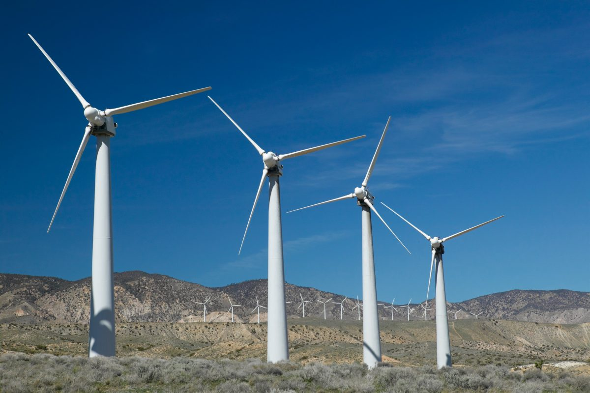

أنواع الطاقة المتجددة

الطاقة الشمسية
معلومات عن الطاقة الشمسية
تستخدم أشعة الشمس لتوليد الكهرباء أو تسخين المياه، وهي من أكثر مصادر الطاقة المتجددة شيوعًا.

طاقة الرياح
معلومات عن طاقة الرياح
تستخدم التوربينات الهوائية لتحويل طاقة الرياح إلى كهرباء، مما يقلل من الاعتماد على الوقود الأحفوري.

الطاقة المائية
معلومات عن الطاقة المائية
تعتمد على تدفق المياه من الأنهار أو السدود لتوليد الطاقة الكهربائية بطريقة مستدامة.